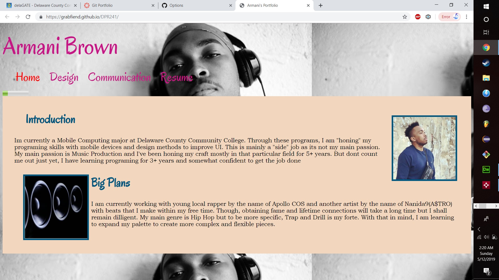
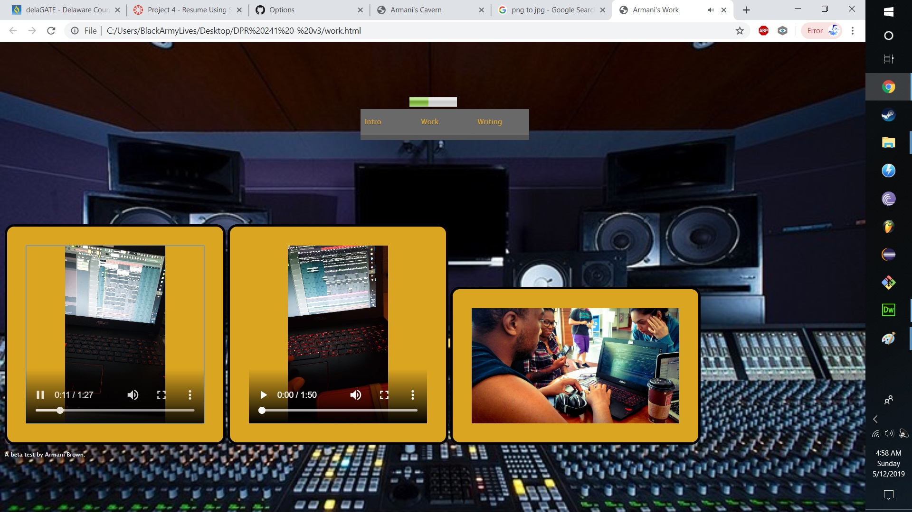

My Thoughts on Git
I didnt think much about it, but I found it very interesting that you could make pretty much everything from the GIT Terminal. And to add icing on the top, you can later upload straight from the Terminal to GitHub which was pretty cool. But as I continued to work, I just found it easier to us Adobe Dreamweaver to create my code and later on upload it to GitHub. My only nitpick with the GIT Terminal was the fact that if I made any mistakes and if I needed to make a different folder, I'd had to open the Terminal as administrator even though my log-in was the administrator. But that problem is very minuscule so I digress.The one thing that was very difficult for me was to remember the command to commit changes to for new files and to update. From first glance, it was like me messing with the Command Prompt on Windows, very delicate. But with tutorials online and the class that i'm taking now made things a bit easier.
Version 1
This picture above is the 1st version of the site. At that time, this was just a simple test for the theme I was using. At that moment in time, index.html was the only page despite the navigation "bar" at the top of the page which it didn't link to anything. Besides from that, My Introduction and "Big Plans" was the only content on the page.
Version 2

I was sadly unable to implement the Skeleton Grid onto my webpage but it was definitely an upgrade to Version 1. I managed to merge parts of my resume to this site to show employers that are interested in my works. The design of the site is more developed than Version 1.
Version 3
For Version 3, I added another page called "Armani's Work". This page includes some of my work which will include more in the future. This was also to test the Flexbox function within Adobe Dreamweaver. I also added the navigation bar on the top of the screen which is also on the home page. Version 2 did not have a navigation bar because there was not extra pages to navigate to at that moment in time. With the navigation bar, you were able to go from "Home" and "Work".
Version 4

Now with Version 4, I implemented Bootstrap to give this website this design. A smooth slideshow, simple yet effective theme, and a clean finish. While on the Home Screen, if you press "News" or "About" on the navigation bar, they will anchor you to that specific part of that screen. As for "Thoughts on Git", it will take you to another webpage. While on "Thoughts on Git" the only option is for you to select "Home" to obviously go back to the home page.